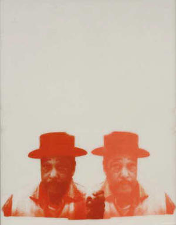

The Black Arts Movement

Cleveland Bellow, Duke, 1968
The Black Arts Movement is often viewed as the sister to the Black Power Movement and came about during a time of political unrest. The movement sought to provide a corrective to images that were viewed as harmful and attempted to correct these images through the creation of works that centered the black experience, and were revolutionary.
Although it was primarily a literary movement, the movement's concepts also applied to the visual arts.